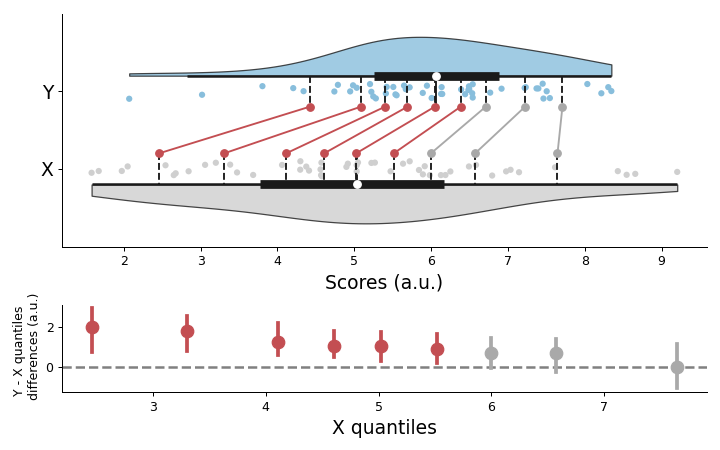

pingouin.plot_shift¶
-
pingouin.plot_shift(x, y, paired=False, n_boot=1000, percentiles=array([10, 20, 30, 40, 50, 60, 70, 80, 90]), ci=0.95, seed=None, show_median=True, violin=True)¶ Shift plot.
- Parameters
- x, yarray_like
First and second set of observations.
- pairedbool
Specify whether
xandyare related (i.e. repeated measures) or independent.New in version 0.3.0.
- n_bootint
Number of bootstrap iterations. The higher, the better, the slower.
- percentiles: array_like
Sequence of percentiles to compute, which must be between 0 and 100 inclusive. Default set to [10, 20, 30, 40, 50, 60, 70, 80, 90].
- ci: float
Confidence level (0.95 = 95%).
- seedint or None
Random seed for generating bootstrap samples, can be integer or None for no seed (default).
- show_median: boolean
If True (default), show the median with black lines.
- violin: boolean
If True (default), plot the density of X and Y distributions. Defaut set to True.
- Returns
- figmatplotlib Figure instance
Matplotlib Figure. To get the individual axes, use fig.axes.
See also
Notes
The shift plot is described in [1]. It computes a shift function [2] for two (in)dependent groups using the robust Harrell-Davis quantile estimator in conjunction with bias-corrected bootstrap confidence intervals.
References
- 1
Rousselet, G. A., Pernet, C. R. and Wilcox, R. R. (2017). Beyond differences in means: robust graphical methods to compare two groups in neuroscience. Eur J Neurosci, 46: 1738-1748. doi:10.1111/ejn.13610
- 2
Examples
Default shift plot
>>> import numpy as np >>> import pingouin as pg >>> np.random.seed(42) >>> x = np.random.normal(5.5, 2, 50) >>> y = np.random.normal(6, 1.5, 50) >>> fig = pg.plot_shift(x, y)
With different options
>>> import numpy as np >>> import pingouin as pg >>> np.random.seed(42) >>> x = np.random.normal(5.5, 2, 30) >>> y = np.random.normal(6, 1.5, 30) >>> fig = pg.plot_shift(x, y, paired=True, n_boot=2000, ... percentiles=[25, 50, 75], ... show_median=False, seed=456, violin=False)